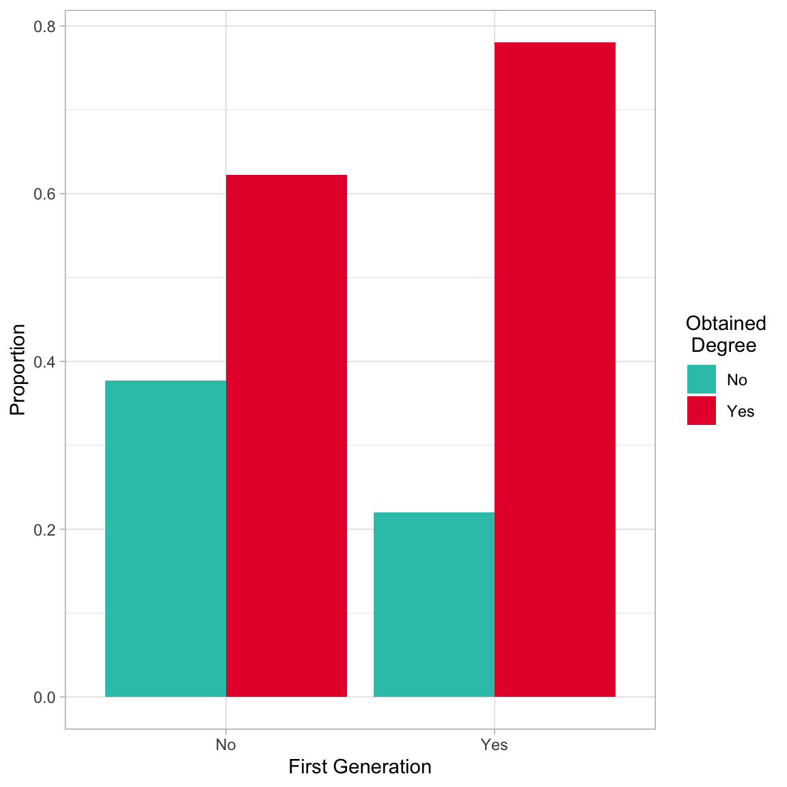
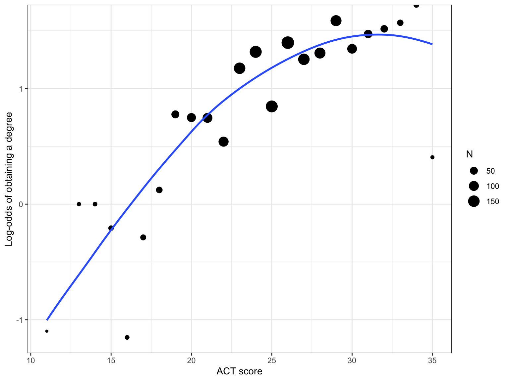
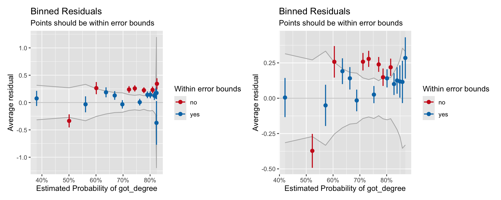
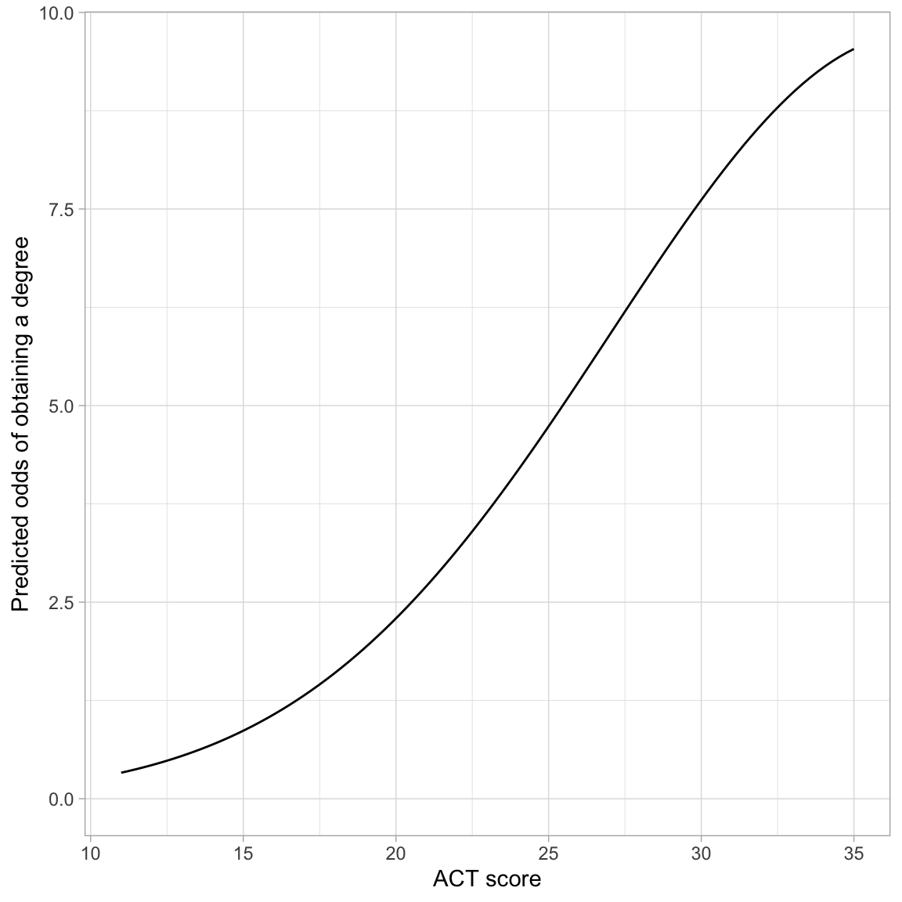
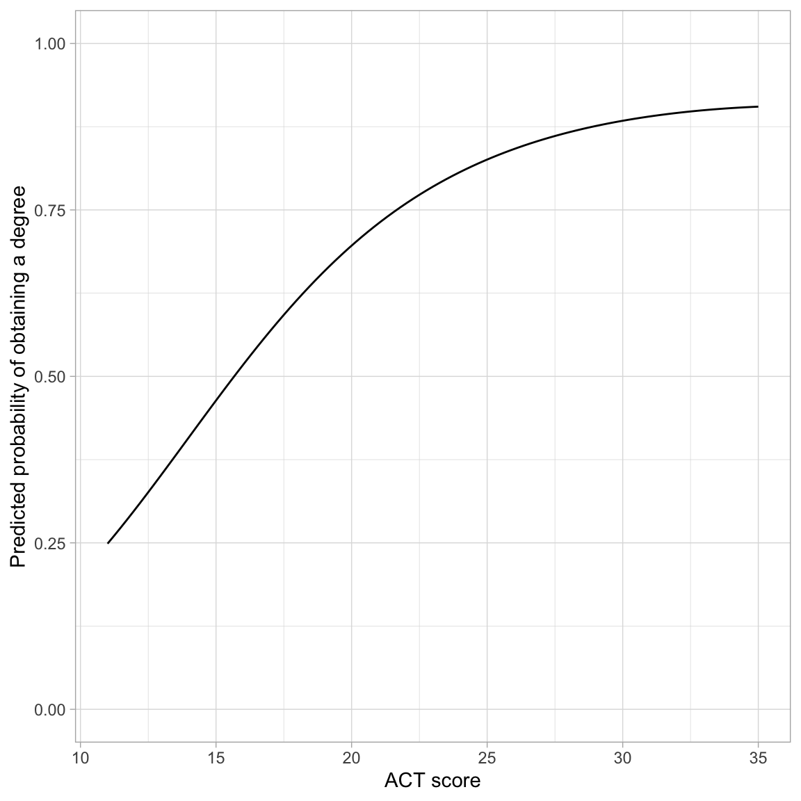
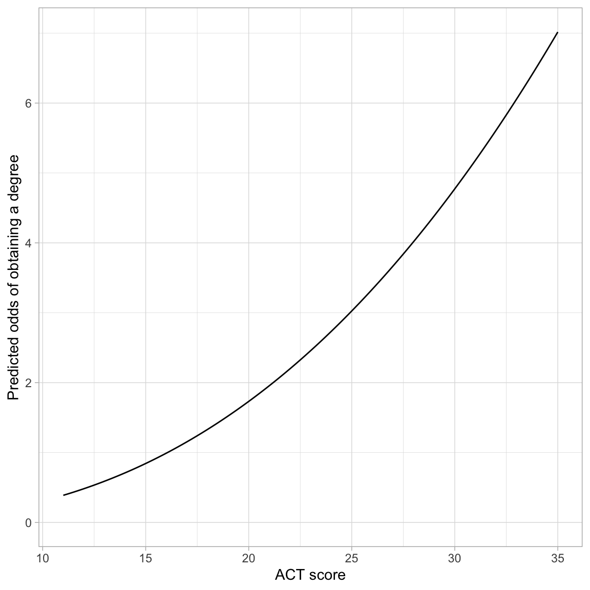
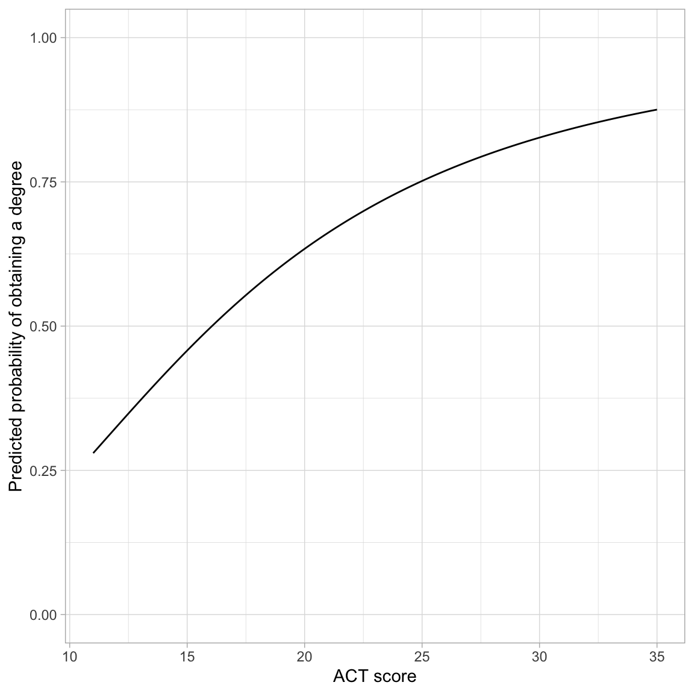
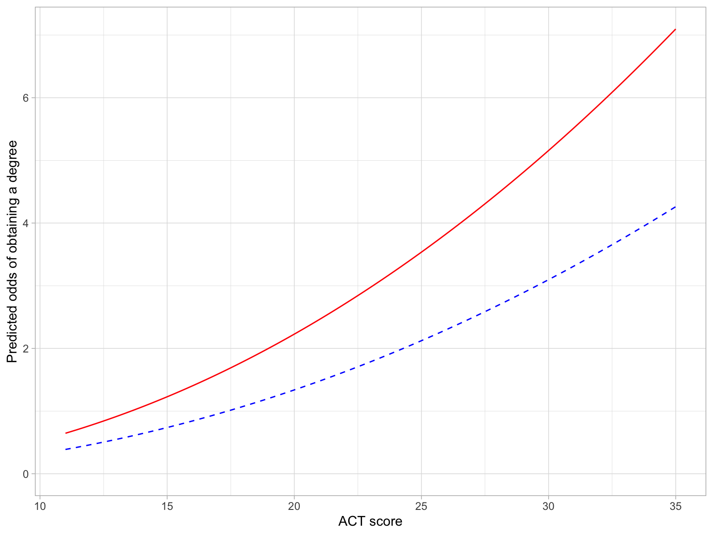
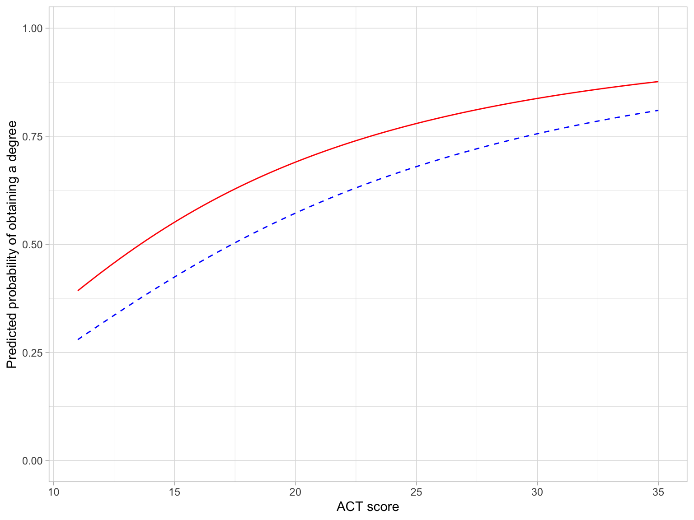
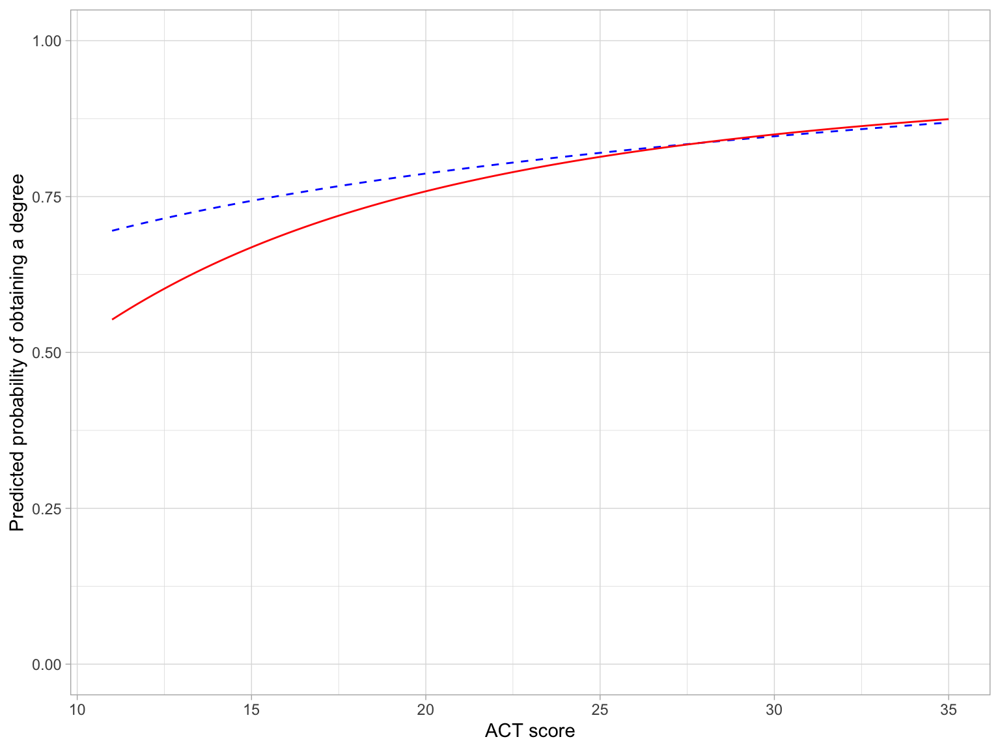

In this chapter, you will expand your knowledge of the logistic regression model to include categorical predictors, non-linear predictor effects, covariates, and interaction terms. We will again use data from the file graduation.csv to explore predictors of college graduation.
Within the analysis, we will focus on the research question of whether the probability of obtaining a degree differs for first and non-first generation students. We will use information criteria as the framework of evidence to adopt different models, along with an evaluation of the models’ residuals.
# Load librarieslibrary(AICcmodavg)library(broom)library(corrr)library(patchwork)library(performance)library(texreg)library(tidyverse)# Read in data and create dummy variable for categorical variablesgrad =read_csv(file ="https://raw.githubusercontent.com/zief0002/fluffy-ants/main/data/graduation.csv") |>mutate(got_degree =if_else(degree =="Yes", 1, 0),is_firstgen =if_else(first_gen =="Yes", 1, 0),is_nontrad =if_else(non_traditional =="Yes", 1, 0), )# View datagrad
# A tibble: 2,344 × 10
student degree act scholarship ap_courses first_gen non_traditional
<dbl> <chr> <dbl> <dbl> <dbl> <chr> <chr>
1 1 Yes 21 0 0 No No
2 2 Yes 19 0 0 No No
3 3 Yes 27 0 0 Yes No
4 4 Yes 25 0.5 0 Yes No
5 5 No 28 0 17 Yes No
6 6 Yes 21 0 0 No Yes
7 7 Yes 27 0 8 Yes No
8 8 No 20 0 0 No No
9 9 Yes 26 0 0 Yes No
10 10 Yes 25 0 4 Yes No
# ℹ 2,334 more rows
# ℹ 3 more variables: got_degree <dbl>, is_firstgen <dbl>, is_nontrad <dbl>
# Fit models from previous notesglm.0=glm(got_degree ~1, data = grad, family =binomial(link ="logit"))glm.1=glm(got_degree ~1+ act, data = grad, family =binomial(link ="logit"))
15.2 Categorical Predictors
We will next turn to evaluating whether first generation students have a different predicted probability of obtaining a degree than non-first generation students. As always, we start with computing summary statistics and plots. Because both the predictor and outcome are categorical, we will again focus on counts and proportions.
# Counts of students by degree and first gen statusgrad |>group_by(degree, first_gen) |>summarize(N =n() )
# A tibble: 4 × 3
# Groups: degree [2]
degree first_gen N
<chr> <chr> <int>
1 No No 267
2 No Yes 360
3 Yes No 440
4 Yes Yes 1277
15.2.1 Contingency Tables
The primary method of displaying summary information when both the predictor and outcome are categorical is via a contingency table. In our two-way table, we will display counts from the four different combinations of first generation and degree obtainment status. Since each of those variables includes two levels (degree/no degree and first gen/non-first gen), this is referred to as a 2x2 table; each number refers to the number of levels in one of the variables being displayed.
Table 15.1: 2x2 table of counts for degree obtainment by first generation status.
First Generation Status
Obtained Degree
Total
No
Yes
No
267
440
707
Yes
360
1277
1637
Total
627
1717
2344
There are three types of counts (sample sizes) that are typically included in contingency tables:
Cell Counts: The “cells” in the two-way table include counts for the four combinations of first generation and degree obtainment status. The counts in those four cells are referred to as cell counts or cell sample sizes. These are generally notated symbolically as \(n_{i,j}\) where i indicates the row and j indicates the column. For example, \(n_{1,2}=440\) indicates the number of non-first generation students who obtained a degree.
Marginal Counts: The counts in the “Total” row and column are called the marginal counts, or marginal sample sizes. They indicate the total counts collapsing across either rows or columns. These are generally notated symbolically as \(n_{\bullet,j}\) or \(n_{i, \bullet}\) where the dot indicates that we are collapsing across either rows or columns. For example, \(n_{2,\bullet}=1637\) indicates the number of first generation students.
Grand Count: Finally, there is the cell that includes the grand total sample size. This is usually just denoted as N (or sometimes \(n_{\bullet,\bullet}\)). In our example, \(n=2344\), the total number of students in the sample.
The three different totals (row total, column total, grand total) means that we can compute three different proportions for each of the four cells. Each proportion has a different interpretation depending on which total is used in the denominator. For example, consider the cell that designates first generation students who obtained a degree (\(n_{2,2}=1227\)).
The grand total of 2344 indicates all student, so computing the proportion using that denominator, \(1227/2344 = 0.523\), indicates that 0.523 of all students are first generation who obtained a degree.
The row total of 1637 indicates the number of students who are first generation students, so computing the proportion using that denominator, \(1227/1637 = 0.750\), indicates that 0.750 of all first generation students obtained a degree.
The column total of 1717 indicates the number of students who obtained a degree, so computing the proportion using that denominator, \(1227/1717 = 0.715\), indicates that 0.715 of students who obtained a degree are first generation students.
15.2.2 Computing Proportions: Order in group_by() Matters
We can compute proportions using the row and column totals in the denominator by using the same set of dplyr operations we used previously, namely grouping by the predictor and outcome, summarizing to compute the sample size, and then mutating to find the proportion. The key is the order in which we include the variables in group_by().
If we want to use the row totals (the number of first generation and non-first generation students) in the denominator, we need to include first_gen in the group_by() prior to degree. The computation of sum() in mutate() will continue to be based on the first generation grouping (group_by() is in effect until we explicitly use ungroup()).
# Use first generations status totals in proportiongrad |>group_by(first_gen, degree) |>summarize(N =n()) |>mutate(Prop = N /sum (N) )
# A tibble: 4 × 4
# Groups: first_gen [2]
first_gen degree N Prop
<chr> <chr> <int> <dbl>
1 No No 267 0.378
2 No Yes 440 0.622
3 Yes No 360 0.220
4 Yes Yes 1277 0.780
To compute proportions based on the number of students who obtained a degree and the number who did not obtain a degree, we need to include degree in the group_by() function prior to first_gen.
# Use degree status totals in proportiongrad |>group_by(degree, first_gen) |>summarize(N =n()) |>mutate(Prop = N /sum (N) )
# A tibble: 4 × 4
# Groups: degree [2]
degree first_gen N Prop
<chr> <chr> <int> <dbl>
1 No No 267 0.426
2 No Yes 360 0.574
3 Yes No 440 0.256
4 Yes Yes 1277 0.744
If you want to base the proportions on the grand total, the order in group_by() doesn’t matter, but you need to explicitly ungroup() prior to computing the proportions.
# Use grand total in proportiongrad |>group_by(degree, first_gen) |>summarize(N =n()) |>ungroup() |>mutate(Prop = N /sum (N) )
# A tibble: 4 × 4
degree first_gen N Prop
<chr> <chr> <int> <dbl>
1 No No 267 0.114
2 No Yes 360 0.154
3 Yes No 440 0.188
4 Yes Yes 1277 0.545
FYI
You need to select the the denominator to compute your proportions based on your research questions. You also need to make sure that if you are using R (or another software) to compute proportions that the proportions you want are being outputted.
15.2.3 Back to the RQ
We wanted to know whether first generation students have a different predicted probability of obtaining a degree than non-first generation students. Thus, we want to use the row totals in our denominator. So we are comparing the proportion of all first generation students who got a degree to the proportion of all non-first generation students who got a degree.
# Proportions to answer our RQgrad |>group_by(first_gen, degree) |>summarize(N =n()) |>mutate(Prop = N /sum (N) ) |>ungroup() |>filter(degree =="Yes")
# A tibble: 2 × 4
first_gen degree N Prop
<chr> <chr> <int> <dbl>
1 No Yes 440 0.622
2 Yes Yes 1277 0.780
Based on the sample proportions, the proportion of first generation students who obtain a degree (0.780) is higher by 0.158 than the proportion of non-first generation students who obtain a degree (0.622). We could also plot this using a bar chart. The argument position=position_dodge() creates the side-by-side plot. Otherwise the plot would be a stacked bar chart which gives the same information.
# Side-by-side bar chartgrad |>group_by(first_gen, degree) |>summarize(N =n()) |>mutate(Prop = N /sum (N) ) |>ungroup() |>ggplot(aes(x = first_gen, y = Prop, fill = degree)) +geom_bar(stat ="Identity", position =position_dodge()) +theme_light() +xlab("First Generation") +ylab("Proportion") +scale_fill_manual(name ="Obtained\n Degree",values =c("#2EC4B6", "#E71D36") )

Side-by-side barplot showing the proportion of first generation and non-first generation students in the sample who obtained and did not obtain a degree.
To evaluate whether this sample difference is more than we expect because of chance, we could create a dummy-coded indicator for first generation status and use that as a predictor in our logistic regression model.
# Dummy code first_gengrad = grad |>mutate(is_firstgen =if_else(first_gen =="Yes", 1, 0) )# Fit modelglm.2=glm(got_degree ~1+ is_firstgen, data = grad, family =binomial(link ="logit"))# Evaluate first generation predictoraictab(cand.set =list(glm.0, glm.2),modnames =c("Intercept-Only", "Effect of First Gen"))
Model selection based on AICc:
K AICc Delta_AICc AICcWt Cum.Wt LL
Effect of First Gen 2 2666.09 0.00 1 1 -1331.04
Intercept-Only 1 2724.55 58.46 0 1 -1361.27
Given the data and candidate models, the model that includes first generation status in the model has more evidence. Since we are comparing to the intercept-only model in this output, We can also use the information in the residual deviance column to compute a pseudo-\(R^2\) value.
# Compute pseudo R2(2722.6-2662.1) /2722.6
[1] 0.02222141
The pseudo-\(R^2\) value of 0.022 is close to 0, which suggests that first generation status although statistically relevant, is not incredibly predictive of the log-odds (or odds or probability) of obtaining a degree. Next we turn to the fitted equation:
# Get coefficientscoef(glm.2)
(Intercept) is_firstgen
0.4995261 0.7666388
Based on this output, the fitted equation for the model is:
# Transform coefficients to odds metricexp(coef(glm.2))
(Intercept) is_firstgen
1.647940 2.152519
Interpreting these coefficients in the odds metric:
Non-first generation students’ predicted odds of obtaining a degree is 1.65. That is their probability of obtaining a degree is 1.64 times that of not obtaining a degree.
First generation students’ predicted odds of obtaining a degree is 2.15 times higher than non-first generation students’ odds of obtaining a degree.
To determine first generation students’ odds of obtaining a degree, we can either substitute 1 into the transformed fitted equation:
# Prob non-first gen studentsexp(0.50) / (1+exp(0.50))
[1] 0.6224593
# Prob first gen studentsexp(0.50+0.77) / (1+exp(0.50+0.77))
[1] 0.7807427
In the probability metric we just compute the predicted probabilities and report/compare them. There is no easy conversion of the slope coefficient to interpret how much higher the probability of obtaining a degree for first generation students is than for non-first generation students.
15.2.4 Evaluating Assumptions
When the only predictor in a logistic model is categorical, the only thing we need to pay attention to is whether the average residual for each level of the predictor is close to 0. We can again use the binned_residuals() function to evaluate this. When the predictor is categorical, the binning will be done on the levels of the predictor.
# Obtain average fitted values and average residualsout.2=binned_residuals(glm.2)# View data frameas.data.frame(out.2)
xbar ybar n x.lo x.hi se CI_low
conf_int 0.6223479 0.07908158 707 0.6223479 0.6223479 0.08473425 0.04270069
conf_int1 0.7800855 0.16704062 1637 0.7800855 0.7800855 0.04907564 0.14668272
CI_high group
conf_int 0.1154625 yes
conf_int1 0.1873985 no
Here we see the average residual (ybar) for both groups is near zero. This satisfies the linearity assumption. If you examined the binned residual plot, you would also see this, albeit in a graphical form.
The results from glm.2 indicated that there were differences between first and non-first generation students in the probability of obtaining a degree. Based on this model’s result, we found that the predicted probability of obtaining a degre for first generation students was 0.780 while that for non-first generation students was 0.622. Does this difference persist after controlling for other covariates?
To examine this, we want to fit a set of models that systematically include potential covariates along with first generation status. Our strategy for this is to start with the most important covariate. We can compare the model that includes first generation status and this covariate to a model that just includes first generation status. If the evidence indicates that the model with only first generation status is important we are done. If the evidence points toward the model that also includes the most important covariate, then we will continue by comparing that model to one that includes first generation status and the two most important covariates. We will continue with these comparisons until we adopt a final model or models.
To determine the order of importance, we can compute the correlations between each covariate and the dummy-coded outcome.
# A tibble: 5 × 6
term got_degree act scholarship ap_courses is_nontrad
<chr> <dbl> <dbl> <dbl> <dbl> <dbl>
1 got_degree NA 0.195 0.142 0.149 -0.0841
2 act 0.195 NA 0.315 0.432 -0.103
3 scholarship 0.142 0.315 NA 0.197 -0.0343
4 ap_courses 0.149 0.432 0.197 NA -0.0552
5 is_nontrad -0.0841 -0.103 -0.0343 -0.0552 NA
The rank ordering of covariates (based on the absolute value of the correlation coefficients) will be:
ACT scores (\(r = 0.195\), most important)
Number of AP courses (\(r = 0.149\))
Scholarship amount (\(r = 0.142\))
Non-traditional status (\(r = -0.084\))
15.3 Non-Linear Effect of ACT
To begin the analysis, we will include ACT scores as a covariate in the model. Since the act variable is continuous, we need to use the “correct” functional form when we include it in the model. In the previous set of notes, we saw some misfit when we examined the binned residual plot for the logistic regression model that included ACT as a predictor of the probability of obtaining a degree. One possibility is that this may be because the effect of ACT on these probabilities is non-linear. To examine this, we can plot the empirical log-odds of obtaining a degree versus ACT scores, and examine the functional form of the relationship.
Code
# Obtain the log-odds who obtain a degree for each ACT scoreprop_grad = grad |>group_by(act, degree) |>summarize(N =n()) |>mutate(Prop = N /sum (N) ) |>ungroup() |>filter(degree =="Yes") |>mutate(Odds = Prop / (1- Prop),Logits =log(Odds) )# Scatterplotggplot(data = prop_grad, aes(x = act, y = Logits)) +geom_point(aes(size = N)) +geom_smooth(aes(weight = N), method ="loess", se =FALSE) +theme_bw() +xlab("ACT score") +ylab("Log-odds of obtaining a degree")

Figure 15.1: Log-odds of obtaining a degree conditional on ACT score. Size of the dot is proportional to sample size. The loess smoother is also weighted based on the sample size.
This suggests a non-linear relationship between ACT score and the log-odds of obtaining a degree. Using the Rule-of-the-Bulge, we can try to linearize this relationship by:
Including a quadratic effect of ACT; or
Log-transforming the ACT variable.
# Fit non-linear modelsglm.1_quad =glm(got_degree ~1+ act +I(act^2), data = grad, family =binomial(link ="logit"))glm.1_log =glm(got_degree ~1+log(act), data = grad, family =binomial(link ="logit"))# Obtain binned residualsout.1_quad =binned_residuals(glm.1_quad)out.1_log =binned_residuals(glm.1_log)# Binned residual plotsplot(out.1_quad) |plot(out.1_log)

Figure 15.2: Binned residual plots for two models that include non-linear effects of ACT. The quadratic model (LEFT) and the log-linear model (RIGHT).
The binned residuals show slight misfit to both the log-linear model and the quadratic model. We also examine the empirical support via information criteria.
Model selection based on AICc:
K AICc Delta_AICc AICcWt Cum.Wt LL
Quadratic Effect 3 2632.13 0.00 0.51 0.51 -1313.06
Log-Linear Effect 2 2632.34 0.21 0.46 0.96 -1314.17
Linear Effect 2 2637.24 5.11 0.04 1.00 -1316.62
Here the most empirically supported model (given the data and the candidate models) is the quadratic model, although there is also a great deal of support for the log-linear model. I would probably adopt the log-linear model based on its simplicity and the theoretical rationale that I would not expect the probability of graduating to be smaller for high ACT values. But, for pedagogical purposes, we will look at and interpret the output for both models.
15.3.1 Quadratic Effect of ACT
We will start our interpretation by examining the coef() output.
Since this is an interaction model, we interpret the effect of ACT as: The effect of ACT on the log-odds of obtaining a degree depends on ACT. (We could also graph this effect if we were interested in the effect of ACT on the log-odds of obtaining a degree.)
Transforming the fitted equation to the odds metric:
Because changing ACT now impacts two exponent terms, one of which includes the quadratic of ACT, it is super essential that we create a plot to interpret the effects of ACT on the odds of obtaining a degree.
# Plot the fitted equationggplot(data = grad, aes(x = act, y = got_degree)) +geom_point(alpha =0) +geom_function(fun =function(x) {exp(-4.57+0.37*x -0.005*x^2)} ) +theme_light() +xlab("ACT score") +ylab("Predicted odds of obtaining a degree")

Figure 15.3: Predicted odds of obtaining a degree as a function of ACT score.
The odds curve is somewhat “S”-shaped (although it is not constrained between 0 and 1 like the probability curve). This is because of the quadratic effect of ACT. The overall trend is one of exponential growth, although the rate-of-change is not constant within this curve. The most rapid change in the odds of obtaining a degree occurs at ACT scores between 20 and 30.
Finally, we could also transform the equation into the probability metric. The fitted equation is:
Again, it is worthwhile to create a plot to interpret the effects of ACT on the probability of obtaining a degree.
# Plot the fitted equationggplot(data = grad, aes(x = act, y = got_degree)) +geom_point(alpha =0) +geom_function(fun =function(x) {exp(-4.57+0.37*x -0.005*x^2) / (1+exp(-4.57+0.37*x -0.005*x^2))} ) +theme_light() +xlab("ACT score") +ylab("Predicted probability of obtaining a degree")

Figure 15.4: Predicted probability of obtaining a degree as a function of ACT score.
The probability curve is “S”-shaped and constrained between 0 and 1. The left-hand side of the “S” is compressed, probably due to the range of ACT scores. ACT has the largest effect on the probability of obtaining a degree for scores less than 25, and then the effect begins to plateau (although it is still growing as the logistic curve is monotonic).
15.3.2 Log-Linear Effect of ACT
We will again start our interpretation by examining the coef() output.
It is again easier to interpret the effects of ACT on the odds of obtaining a degree by creating a plot .
# Plot the fitted equationggplot(data = grad, aes(x = act, y = got_degree)) +geom_point(alpha =0) +geom_function(fun =function(x) {exp(-6.94+2.50*log(x))} ) +theme_light() +xlab("ACT score") +ylab("Predicted odds of obtaining a degree")

Figure 15.5: Predicted odds of obtaining a degree as a function of ACT score.
The effect of ACT on the probability of obtaining a degree is positive and non-linear (exponential growth). The predicted odds of obtaining a degree increases exponentially for higher ACT scores.
Finally, we could also transform the equation into the probability metric. The fitted equation is:
Again, it is worthwhile to create a plot to interpret the effects of ACT on the probability of obtaining a degree.
# Plot the fitted equationggplot(data = grad, aes(x = act, y = got_degree)) +geom_point(alpha =0) +geom_function(fun =function(x) {exp(-6.94+2.50*log(x)) / (1+exp(-6.94+2.50*log(x)))} ) +theme_light() +xlab("ACT score") +ylab("Predicted probability of obtaining a degree")

Figure 15.6: Predicted probability of obtaining a degree as a function of ACT score.
The effect of ACT on the probability of obtaining a degree is positive and non-linear. ACT has a larger effect on the probability of obtaining a degree for smaller ACT scores and this effect, while still positive, diminishes for higher ACT scores.
PROTIP
Once you include non-linear effects in the model, always create a plot of the fitted equation to try and interpret odds or probabilities.
15.4 Adding Covariates: Main Effects Models
Now that we have settled on a functional form for the effect of ACT, we can include it as a covariate in a model with first generation status. Including covariates in the logistic model is done the same way as for lm() models. We fit that model with the following syntax:
# Fit main effects modelglm.3=glm(got_degree ~1+ is_firstgen +log(act), data = grad, family =binomial(link ="logit"))
To evaluate this model, and to begin to provide an answer for our research question, we will examine the model evidence comparing this model to both the baseline model (intercept-only) and the model that included the main-effect of first generation status.
# Model evidenceaictab(cand.set =list(glm.0, glm.2, glm.3),modnames =c("Intercept-Only", "First Gen.", "First Gen. + ACT"))
Model selection based on AICc:
K AICc Delta_AICc AICcWt Cum.Wt LL
First Gen. + ACT 3 2611.01 0.00 1 1 -1302.50
First Gen. 2 2666.09 55.09 0 1 -1331.04
Intercept-Only 1 2724.55 113.54 0 1 -1361.27
Given the data and candidate models fitted, the empirical evidence overwhelmingly supports including both ACT scores and first generation status in the model. Adopting this model, we next look at the coefficients:
Using the logit/log-odds metric, we interpret the coefficients as:
Non-first generations students with an ACT score of 1 have a predicted log-odds of graduating of \(-5.91\).
Each 1% difference in ACT score is associated with a difference of 0.02 in the predicted log-odds of graduating, after controlling for first generation status.
First generation college students, have a predicted log-odds of graduating that is 0.51 higher than students who are not first generation students, after controlling for differences in ACT scores.
15.4.1 Back-Transforming to Odds
If we back-transform the coefficients to facilitate interpretations using the odds metric, the fitted equation is:
We can interpret the intercept and the effect of first generation status directly:
Non-first generations students with an ACT score of 1 have a predicted odds of graduating of \(e^{-5.91}=.003\).
First generation college students, have a predicted odds of graduating that is \(e^{0.51}=1.66\) times higher than that for non-first generations students, after controlling for differences in ACT scores.
Each one-point difference in ACT score is associated with improving the odds of graduating 1.09 times, on average, after controlling for whether or not the students are first generation college students.
While it is not pertinent to the research question, if you wanted to interpret the effect of ACT, you could plot the fitted model. As always with main effects models, we find the fitted equation for first generation and non-first generation students, and plot the two curves separately using multiple geom_function() layers.
# Plot the fitted equationggplot(data = grad, aes(x = act, y = got_degree)) +geom_point(alpha =0) +# Non-first generation studentsgeom_function(fun =function(x) {exp(-5.91+2.07*log(x))},linetype ="dashed",color ="blue" ) +# First generation studentsgeom_function(fun =function(x) {exp(-5.40+2.07*log(x))},linetype ="solid",color ="red" )+theme_light() +xlab("ACT score") +ylab("Predicted odds of obtaining a degree")

Figure 15.7: Predicted odds of obtaining a degree as a function of ACT score first generation (solid, red line) and non-first generation (dashed, blue line) students.
Here we see that the odds of graduating increase exponentially at higher ACT scores for both first generation and non-first generation students, on average. This rate of increase, however, is higher for first generation students. Moreover, first generation students have higher odds of graduating than non-first generation students, regardless of ACT score.
15.4.2 Back-Transforming to Probability
Again, while not related to the research question, we can also plot the predicted probability of graduating as a function of ACT score. Algebraically manipulating the fitted equation,
We can then produce the fitted equations for non-first generation and first generation students by substituting either 0 or 1, respectively, into the firstgen variable. These equations are:
We can include each of these in a geom_function() layer in our plot.
# Plot the fitted equationsggplot(data = grad, aes(x = act, y = got_degree)) +geom_point(alpha =0) +# Non-first generation studentsgeom_function(fun =function(x) {exp(-5.91+2.07*log(x)) / (1+exp(-5.91+2.07*log(x)))},linetype ="dashed",color ="blue" ) +# First generation studentsgeom_function(fun =function(x) {exp(-5.40+2.07*log(x)) / (1+exp(-5.40+2.07*log(x)))},linetype ="solid",color ="red" ) +theme_light() +xlab("ACT score") +ylab("Predicted probability of obtaining a degree") +ylim(0, 1)

Figure 15.8: Predicted probabilities of obtaining a degree as a function of ACT score first generation (solid, red line) and non-first generation (dashed, blue line) students.
Here we see that the probability of graduatingobtaining a degree is positively associated with ACT score for both first generation and non-first generation students. The magnitude of the effect of ACT depends on ACT score for both groups. Although first generation students have higher probability of obtaining a degree than non-first generation students regardless of ACT score, the magnitude of this difference decreases at higher ACT scores.
15.5 Including Other Covariates in the Model
We will now fit a series of models that systematically include the remainder of the potential covariates based on their importance. We will have to adopt the correct functional form for ALL continuous variables by examining the plots of the data and residuals from potential transformations. (NOTE: This work is not shown here, but you should undertake it.)
The second covariate we will include is the number of AP courses taken. We use a log-transformation of this variable given its curvilinear status with the empirical log-odds of obtaining a degree. Because it has values of 0, we also add 1 before log-transforming.
# Log-linear effect of AP coursesglm.4=glm(got_degree ~1+ is_firstgen +log(act) +log(ap_courses +1), data = grad, family =binomial(link ="logit"))
Next, we include scholarship amount into the model. An examination of the empirical log-odds of obtaining a degree versus scholarship amount also suggested a curvilinear relationship. We adopt a log-linear model, again adding 1 prior to transforming using the logarithm since there are 0s in the variable.
# Effect of scholarshipglm.5=glm(got_degree ~1+ is_firstgen +log(act) +log(ap_courses +1) +log(scholarship +1), data = grad, family =binomial(link ="logit"))
Finally, we include the effect of non-traditional student status. Since it is a dummy-coded variable, we do not have to worry about the functional form. However, since we don’t know the functional form we need for scholarship amount, we will consider both when we include this covariate.
# Effect of non-traditional studentglm.6=glm(got_degree ~1+ is_firstgen +log(act) +log(ap_courses +1) +log(scholarship +1) + is_nontrad, data = grad, family =binomial(link ="logit"))
Now we will use information criteria to select from these potential models.
Model selection based on AICc:
K AICc Delta_AICc AICcWt Cum.Wt LL
FG + ACT + AP + Sch + NT 6 2552.39 0.00 0.9 0.9 -1270.18
FG + ACT + AP + Sch 5 2556.80 4.41 0.1 1.0 -1273.39
FG + ACT + AP 4 2579.98 27.59 0.0 1.0 -1285.98
FG + ACT 3 2611.01 58.62 0.0 1.0 -1302.50
FG 2 2666.09 113.70 0.0 1.0 -1331.04
Here the empirical evidence supports the model that includes all the covariates. Examining the binned residuals (not shown), the model does not seem adequate. Next we turn to evaluating potential interaction terms to see if that improves the residual fit.
15.6 Interaction Between ACT Score and First Generation Status
Since this is an exploratory analysis, we should only fit first-order interactions, and only with the focal predictor (i.e., first generation status). We will adopt the same modeling strategy as before, building up interaction terms in the order of covariate importance.
While the model that includes the interaction between first generation status and ACT has the most empirical evidence (given the data and candidate models), there is some degree of empirical evidence for almost all of the interaction models fitted. Evaluating the binned residuals (not shown) there is a reasonable (and roughly equal) degree of residual fit for glm.7, glm.8, and glm.10. Given this, the information from the AICc table, and the rule of parsimony, we will adopt glm.7.
We will plot these two equations using the probability metric.
# Plot the fitted equationsggplot(data = grad, aes(x = act, y = got_degree)) +geom_point(alpha =0) +# Non-first generation studentsgeom_function(fun =function(x) {exp(-0.66+0.54*log(x)) / (1+exp(-0.66+0.5*log(x)))},linetype ="dashed",color ="blue" ) +# First generation studentsgeom_function(fun =function(x) {exp(-3.70+1.64*log(x)) / (1+exp(-3.70+1.647*log(x)))},linetype ="solid",color ="red" ) +theme_light() +xlab("ACT score") +ylab("Predicted probability of obtaining a degree") +ylim(0, 1)

Figure 15.9: Predicted probability of obtaining a degree as a function of ACT score for first generation (solid, red line) and non-first generation (dashed, blue line) who ar 18 years old at the time of enrollment. The effects for the number of AP credits and scholarship amount (in thousands of dollars) were controlled by setting them to their mean values of 3.28 and 0.18, respectively.
Because our research question is about the effect of first generation status, we will focus the interpretation from this plot on that effect.
Here we see that first generation status and ACT score interact on the probability of obtaining a degree. For students with lower ACT scores the probability of obtaining a degree is smaller for first generation students than for non-first generation students. However, this difference diminishes for students with higher ACT scores.
15.8 Presenting a Table of Logistic Regression Results
We can present selected fitted models from the analysis in a table similar to those we have created for OLS models. In this analysis I would present glm.0, glm.2, glm.3, glm.6, and glm.7. Note that we do not have to present ALL the models we fitted in the table, only those that tell a coherent story about the analysis. (If you are worried about transparency, you can always link to our script file or RMD document which includes all the models fitted in the paper, or include some prose that indicates there were other models fitted.) For these models, we want to report:
Coefficients and SEs
Residual Deviance
AICc values (This can be computed from the df and residual deviances, but since it was our main criterion for model selection, it is a good idea to report it!)
Pseudo-\(R^2\) values
Here is a table I might present for this analysis.
Code
# Create the tablehtmlreg(l =list(glm.0, glm.2, glm.3, glm.6, glm.7),stars =numeric(0), #No p-value starsdigits =2,padding =20, #Add space around columns (you may need to adjust this via trial-and-error)custom.model.names =c("Model A", "Model B", "Model C", "Model D", "Model E"),custom.coef.names =c("Intercept", "First Generation", "ln(ACT Score)","ln(AP Courses + 1)", "ln(Scholarship Amount + 1)", "Non-Traditional Student","First Generation x ln(ACT Score)"),reorder.coef =c(2:7, 1), #Put intercept at bottom of tableinclude.aic =FALSE, #Omit AICinclude.bic =FALSE, #Omit BICinclude.nobs =FALSE, #Omit sample sizeinclude.loglik =FALSE, #Omit log-likelihoodcustom.gof.rows =list(AICc =c(AICc(glm.0), AICc(glm.2), AICc(glm.3), AICc(glm.6), AICc(glm.7)),R2 = (2722.5-c(NA, 2662.09, 2605.00, 2540.35, 2536.67)) /2722.5 ), # Add AICc valuesreorder.gof =c(3, 1, 2),caption =NULL,caption.above =TRUE, #Move caption above tableinner.rules =1, #Include line rule before model-level outputouter.rules =1 , #Include line rules around tablecustom.note ="The $R^2$ value is based on the proportion of reduced deviance from the intercept-only model (Model A)" )
Table 15.2: Five candidate models predicting variation in the log-odds of obtaining a degree. The first generation and non-traditional student predictors were dummy-coded.
Model A
Model B
Model C
Model D
Model E
First Generation
0.77
0.51
0.42
-3.04
(0.10)
(0.10)
(0.11)
(1.80)
ln(ACT Score)
2.07
1.11
0.54
(0.28)
(0.30)
(0.42)
ln(AP Courses + 1)
0.29
0.28
(0.06)
(0.06)
ln(Scholarship Amount + 1)
1.16
1.11
(0.26)
(0.26)
Non-Traditional Student
-0.84
-0.83
(0.33)
(0.33)
First Generation x ln(ACT Score)
1.10
(0.57)
Intercept
1.01
0.50
-5.91
-3.03
-1.25
(0.05)
(0.08)
(0.86)
(0.94)
(1.31)
Deviance
2722.55
2662.09
2605.00
2540.35
2536.67
AICc
2724.55
2666.09
2611.01
2552.39
2550.72
R2
0.02
0.04
0.07
0.07
The \(R^2\) value is based on the proportion of reduced deviance from the intercept-only model (Model A)
FYI
Pseudo-\(R^2\) values are commonly reported in applied research. Because there are many potential pseudo-\(R^2\) values, you should always indicate the method used to calculate this metric.
Another analyst might choose to use the non-traditional group or to show the effect by displaying both groups, perhaps in different panels.↩︎
Source Code
# More Logistic Regression```{r}#| echo: falsesource("scripts/_common.R")```## PreparationIn this chapter, you will expand your knowledge of the logistic regression model to include categorical predictors, non-linear predictor effects, covariates, and interaction terms. We will again use data from the file *graduation.csv* to explore predictors of college graduation. - [CSV File](https://raw.githubusercontent.com/zief0002/fluffy-ants/main/data/graduation.csv)- [Data Codebook](http://zief0002.github.io/fluffy-ants/codebooks/graduation.html)Within the analysis, we will focus on the research question of whether the probability of obtaining a degree differs for first and non-first generation students. We will use information criteria as the framework of evidence to adopt different models, along with an evaluation of the models' residuals.```{r}# Load librarieslibrary(AICcmodavg)library(broom)library(corrr)library(patchwork)library(performance)library(texreg)library(tidyverse)# Read in data and create dummy variable for categorical variablesgrad =read_csv(file ="https://raw.githubusercontent.com/zief0002/fluffy-ants/main/data/graduation.csv") |>mutate(got_degree =if_else(degree =="Yes", 1, 0),is_firstgen =if_else(first_gen =="Yes", 1, 0),is_nontrad =if_else(non_traditional =="Yes", 1, 0), )# View datagrad# Fit models from previous notesglm.0=glm(got_degree ~1, data = grad, family =binomial(link ="logit"))glm.1=glm(got_degree ~1+ act, data = grad, family =binomial(link ="logit"))```<br />## Categorical PredictorsWe will next turn to evaluating whether first generation students have a different predicted probability of obtaining a degree than non-first generation students. As always, we start with computing summary statistics and plots. Because both the predictor and outcome are categorical, we will again focus on counts and proportions.```{r}# Counts of students by degree and first gen statusgrad |>group_by(degree, first_gen) |>summarize(N =n() )```<br />### Contingency TablesThe primary method of displaying summary information when both the predictor and outcome are categorical is via a **contingency table**. In our two-way table, we will display counts from the four different combinations of first generation and degree obtainment status. Since each of those variables includes two levels (degree/no degree and first gen/non-first gen), this is referred to as a 2x2 table; each number refers to the number of levels in one of the variables being displayed.```{r}#| label: tbl-first-gen#| tbl-cap: "2x2 table of counts for degree obtainment by first generation status."#| code-fold: truetab_01 =data.frame(first_gen =c("No", "Yes", "Total"),no =c(267, 360, 627),yes =c(440, 1277, 1717),total =c(707, 1637, 2344))# Create tabletab_01 |>gt() |>cols_label(first_gen =md("*First Generation Status*"),no =md("No"),yes =md("Yes"),total =md("Total") ) |>cols_align(columns =c(first_gen),align ="left" ) |>cols_align(columns =c(no, yes, total),align ="center" ) |>tab_spanner(label =md("*Obtained Degree*"),columns =c(no, yes) ) |>tab_style(style =cell_text(align ="left", indent =px(20)),locations =cells_body(columns = first_gen,rows =c(1, 2) ) )```There are three types of counts (sample sizes) that are typically included in contingency tables:1. **Cell Counts:** The "cells" in the two-way table include counts for the four combinations of first generation and degree obtainment status. The counts in those four cells are referred to as *cell counts* or cell sample sizes. These are generally notated symbolically as $n_{i,j}$ where *i* indicates the row and *j* indicates the column. For example, $n_{1,2}=440$ indicates the number of non-first generation students who obtained a degree.2. **Marginal Counts:** The counts in the "Total" row and column are called the *marginal counts*, or marginal sample sizes. They indicate the total counts collapsing across either rows or columns. These are generally notated symbolically as $n_{\bullet,j}$ or $n_{i, \bullet}$ where the dot indicates that we are collapsing across either rows or columns. For example, $n_{2,\bullet}=1637$ indicates the number of first generation students.3. **Grand Count:** Finally, there is the cell that includes the grand total sample size. This is usually just denoted as *N* (or sometimes $n_{\bullet,\bullet}$). In our example, $n=2344$, the total number of students in the sample.The three different totals (row total, column total, grand total) means that we can compute three different proportions for each of the four cells. Each proportion has a different interpretation depending on which total is used in the denominator. For example, consider the cell that designates first generation students who obtained a degree ($n_{2,2}=1227$).- The grand total of 2344 indicates all student, so computing the proportion using that denominator, $1227/2344 = 0.523$, indicates that 0.523 of all students are first generation who obtained a degree.- The row total of 1637 indicates the number of students who are first generation students, so computing the proportion using that denominator, $1227/1637 = 0.750$, indicates that 0.750 of all first generation students obtained a degree.- The column total of 1717 indicates the number of students who obtained a degree, so computing the proportion using that denominator, $1227/1717 = 0.715$, indicates that 0.715 of students who obtained a degree are first generation students.<br />### Computing Proportions: Order in `group_by()` MattersWe can compute proportions using the row and column totals in the denominator by using the same set of dplyr operations we used previously, namely grouping by the predictor and outcome, summarizing to compute the sample size, and then mutating to find the proportion. The key is the order in which we include the variables in `group_by()`.If we want to use the row totals (the number of first generation and non-first generation students) in the denominator, we need to include `first_gen` in the `group_by()` prior to `degree`. The computation of `sum()` in `mutate()` will continue to be based on the first generation grouping (`group_by()` is in effect until we explicitly use `ungroup()`).```{r}# Use first generations status totals in proportiongrad |>group_by(first_gen, degree) |>summarize(N =n()) |>mutate(Prop = N /sum (N) )```To compute proportions based on the number of students who obtained a degree and the number who did not obtain a degree, we need to include `degree` in the `group_by()` function prior to `first_gen`.```{r}# Use degree status totals in proportiongrad |>group_by(degree, first_gen) |>summarize(N =n()) |>mutate(Prop = N /sum (N) )```If you want to base the proportions on the grand total, the order in `group_by()` doesn't matter, but you need to explicitly `ungroup()` prior to computing the proportions.```{r}# Use grand total in proportiongrad |>group_by(degree, first_gen) |>summarize(N =n()) |>ungroup() |>mutate(Prop = N /sum (N) )```:::fyi**FYI**You need to select the the denominator to compute your proportions based on your research questions. You also need to make sure that if you are using R (or another software) to compute proportions that the proportions you want are being outputted.:::<br />### Back to the RQWe wanted to know whether first generation students have a different predicted probability of obtaining a degree than non-first generation students. Thus, we want to use the row totals in our denominator. So we are comparing the proportion of all first generation students who got a degree to the proportion of all non-first generation students who got a degree.```{r}# Proportions to answer our RQgrad |>group_by(first_gen, degree) |>summarize(N =n()) |>mutate(Prop = N /sum (N) ) |>ungroup() |>filter(degree =="Yes")```Based on the sample proportions, the proportion of first generation students who obtain a degree (0.780) is higher by 0.158 than the proportion of non-first generation students who obtain a degree (0.622). We could also plot this using a bar chart. The argument `position=position_dodge()` creates the side-by-side plot. Otherwise the plot would be a stacked bar chart which gives the same information.```{r}#| label: side-by-side-bar-chart#| fig-cap: "Side-by-side barplot showing the proportion of first generation and non-first generation students in the sample who obtained and did not obtain a degree."#| fig-alt: "Side-by-side barplot showing the proportion of first generation and non-first generation students in the sample who obtained and did not obtain a degree."# Side-by-side bar chartgrad |>group_by(first_gen, degree) |>summarize(N =n()) |>mutate(Prop = N /sum (N) ) |>ungroup() |>ggplot(aes(x = first_gen, y = Prop, fill = degree)) +geom_bar(stat ="Identity", position =position_dodge()) +theme_light() +xlab("First Generation") +ylab("Proportion") +scale_fill_manual(name ="Obtained\n Degree",values =c("#2EC4B6", "#E71D36") )```To evaluate whether this sample difference is more than we expect because of chance, we could create a dummy-coded indicator for first generation status and use that as a predictor in our logistic regression model.```{r}# Dummy code first_gengrad = grad |>mutate(is_firstgen =if_else(first_gen =="Yes", 1, 0) )# Fit modelglm.2=glm(got_degree ~1+ is_firstgen, data = grad, family =binomial(link ="logit"))# Evaluate first generation predictoraictab(cand.set =list(glm.0, glm.2),modnames =c("Intercept-Only", "Effect of First Gen"))```Given the data and candidate models, the model that includes first generation status in the model has more evidence. Since we are comparing to the intercept-only model in this output, We can also use the information in the residual deviance column to compute a pseudo-$R^2$ value.```{r}# Compute pseudo R2(2722.6-2662.1) /2722.6```The pseudo-$R^2$ value of 0.022 is close to 0, which suggests that first generation status although statistically relevant, is not incredibly predictive of the log-odds (or odds or probability) of obtaining a degree. Next we turn to the fitted equation:```{r}# Get coefficientscoef(glm.2)```Based on this output, the fitted equation for the model is:$$\ln \bigg( \frac{\hat\pi_i}{1 - \hat\pi_i}\bigg) = 0.50+ 0.77(\mathrm{First~Generation}_i)$$Interpreting these coefficients in the log-odds metric:- Non-first generation students' predicted log-odds of obtaining a degree is 0.50.- First generation students' predicted log-odds of obtaining a degree is 0.767 higher than non-first generation students.To determine first generation students' log-odds of obtaining a degree, we substitute 1 into the fitted equation:$$\begin{split}\ln \bigg( \frac{\hat\pi_i}{1 - \hat\pi_i}\bigg) &= 0.50+ 0.77(1) \\[1ex]&= 1.27\end{split}$$We can also transform the fitted equation into the odds metric and interpret.$$\frac{\hat\pi_i}{1 - \hat\pi_i} = e^{0.50} \times e^{0.77(\mathrm{First~Generation}_i)}$$```{r}# Transform coefficients to odds metricexp(coef(glm.2))```Interpreting these coefficients in the odds metric:- Non-first generation students' predicted odds of obtaining a degree is 1.65. That is their probability of obtaining a degree is 1.64 times that of not obtaining a degree.- First generation students' predicted odds of obtaining a degree is 2.15 times higher than non-first generation students' odds of obtaining a degree.To determine first generation students' odds of obtaining a degree, we can either substitute 1 into the transformed fitted equation:$$\begin{split}\ln \bigg( \frac{\hat\pi_i}{1 - \hat\pi_i}\bigg) &= e^{0.50} \times e^{0.77(1)} \\[1ex]&= 3.56\end{split}$$Or we could have transformed their log-odds directly ($e^{1.27}=3.56$). Finally, we could also transform the equation into the probability metric.$$\hat\pi_i = \frac{e^{0.50+ 0.77(\mathrm{First~Generation}_i)}}{1 + e^{0.50+ 0.77(\mathrm{First~Generation}_i)}}$$```{r}# Prob non-first gen studentsexp(0.50) / (1+exp(0.50))# Prob first gen studentsexp(0.50+0.77) / (1+exp(0.50+0.77))```In the probability metric we just compute the predicted probabilities and report/compare them. There is no easy conversion of the slope coefficient to interpret how much higher the probability of obtaining a degree for first generation students is than for non-first generation students.<br />### Evaluating AssumptionsWhen the only predictor in a logistic model is categorical, the only thing we need to pay attention to is whether the average residual for each level of the predictor is close to 0. We can again use the `binned_residuals()` function to evaluate this. When the predictor is categorical, the binning will be done on the levels of the predictor.```{r}#| label: fig-resid-lm2#| fig-cap: "Binned residuals versus the binned fitted values for the model that includes the effect of first generation status to predict the log-odds of obtaining a degree."#| fig-alt: "Binned residuals versus the binned fitted values for the model that includes the effect of first generation status to predict the log-odds of obtaining a degree."#| message: true# Obtain average fitted values and average residualsout.2=binned_residuals(glm.2)# View data frameas.data.frame(out.2)```Here we see the average residual (`ybar`) for both groups is near zero. This satisfies the linearity assumption. If you examined the binned residual plot, you would also see this, albeit in a graphical form.The results from `glm.2` indicated that there were differences between first and non-first generation students in the probability of obtaining a degree. Based on this model's result, we found that the predicted probability of obtaining a degre for first generation students was 0.780 while that for non-first generation students was 0.622. Does this difference persist after controlling for other covariates? To examine this, we want to fit a set of models that systematically include potential covariates along with first generation status. Our strategy for this is to start with the most important covariate. We can compare the model that includes first generation status and this covariate to a model that just includes first generation status. If the evidence indicates that the model with only first generation status is important we are done. If the evidence points toward the model that also includes the most important covariate, then we will continue by comparing that model to one that includes first generation status and the two most important covariates. We will continue with these comparisons until we adopt a final model or models.To determine the order of importance, we can compute the correlations between each covariate and the dummy-coded outcome.```{r}# Correlationsgrad |>select(got_degree, act, scholarship, ap_courses,is_nontrad) |>correlate()```The rank ordering of covariates (based on the absolute value of the correlation coefficients) will be:- ACT scores ($r = 0.195$, most important)- Number of AP courses ($r = 0.149$)- Scholarship amount ($r = 0.142$)- Non-traditional status ($r = -0.084$)<br />## Non-Linear Effect of ACTTo begin the analysis, we will include ACT scores as a covariate in the model. Since the `act` variable is continuous, we need to use the "correct" functional form when we include it in the model. In the previous set of notes, we saw some misfit when we examined the binned residual plot for the logistic regression model that included ACT as a predictor of the probability of obtaining a degree. One possibility is that this may be because the effect of ACT on these probabilities is non-linear. To examine this, we can plot the empirical log-odds of obtaining a degree versus ACT scores, and examine the functional form of the relationship.```{r}#| label: fig-ln-odds-act#| fig-cap: "Log-odds of obtaining a degree conditional on ACT score. Size of the dot is proportional to sample size. The loess smoother is also weighted based on the sample size."#| fig-alt: "Log-odds of obtaining a degree conditional on ACT score. Size of the dot is proportional to sample size. The loess smoother is also weighted based on the sample size."#| fig-width: 8#| fig-height: 6#| out-width: "60%"#| code-fold: true# Obtain the log-odds who obtain a degree for each ACT scoreprop_grad = grad |>group_by(act, degree) |>summarize(N =n()) |>mutate(Prop = N /sum (N) ) |>ungroup() |>filter(degree =="Yes") |>mutate(Odds = Prop / (1- Prop),Logits =log(Odds) )# Scatterplotggplot(data = prop_grad, aes(x = act, y = Logits)) +geom_point(aes(size = N)) +geom_smooth(aes(weight = N), method ="loess", se =FALSE) +theme_bw() +xlab("ACT score") +ylab("Log-odds of obtaining a degree")```This suggests a non-linear relationship between ACT score and the log-odds of obtaining a degree. Using the Rule-of-the-Bulge, we can try to linearize this relationship by:- Including a quadratic effect of ACT; or- Log-transforming the ACT variable.```{r}#| label: fig-residuals#| fig-cap: "Binned residual plots for two models that include non-linear effects of ACT. The quadratic model (LEFT) and the log-linear model (RIGHT)."#| fig-alt: "Binned residual plots for two models that include non-linear effects of ACT. The quadratic model (LEFT) and the log-linear model (RIGHT)."#| fig-width: 10#| fig-height: 4#| out-width: "100%"# Fit non-linear modelsglm.1_quad =glm(got_degree ~1+ act +I(act^2), data = grad, family =binomial(link ="logit"))glm.1_log =glm(got_degree ~1+log(act), data = grad, family =binomial(link ="logit"))# Obtain binned residualsout.1_quad =binned_residuals(glm.1_quad)out.1_log =binned_residuals(glm.1_log)# Binned residual plotsplot(out.1_quad) |plot(out.1_log)```The binned residuals show slight misfit to both the log-linear model and the quadratic model. We also examine the empirical support via information criteria.```{r}aictab(cand.set =list(glm.1, glm.1_quad, glm.1_log),modnames =c("Linear Effect", "Quadratic Effect", "Log-Linear Effect"))```Here the most empirically supported model (given the data and the candidate models) is the quadratic model, although there is also a great deal of support for the log-linear model. I would probably adopt the log-linear model based on its simplicity and the theoretical rationale that I would not expect the probability of graduating to be smaller for high ACT values. But, for pedagogical purposes, we will look at and interpret the output for both models.<br />### Quadratic Effect of ACTWe will start our interpretation by examining the `coef()` output.```{r}# Get coefficientscoef(glm.1_quad)```The fitted model is:$$\ln \bigg( \frac{\hat\pi_i}{1 - \hat\pi_i}\bigg) = -4.57 + 0.37(\mathrm{ACT}_i) - 0.005(\mathrm{ACT}_i^2)$$Since this is an interaction model, we interpret the effect of ACT as: The effect of ACT on the log-odds of obtaining a degree depends on ACT. (We could also graph this effect if we were interested in the effect of ACT on the log-odds of obtaining a degree.)Transforming the fitted equation to the odds metric:$$\frac{\hat\pi_i}{1 - \hat\pi_i} = e^{-4.57} \times e^{0.37(\mathrm{ACT}_i)} \times e^ {-0.005(\mathrm{ACT}_i^2)}$$Because changing ACT now impacts two exponent terms, one of which includes the quadratic of ACT, it is super essential that we create a plot to interpret the effects of ACT on the odds of obtaining a degree.```{r}#| label: fig-quad-fitted#| fig-cap: "Predicted odds of obtaining a degree as a function of ACT score."#| fig-alt: "Predicted odds of obtaining a degree as a function of ACT score."# Plot the fitted equationggplot(data = grad, aes(x = act, y = got_degree)) +geom_point(alpha =0) +geom_function(fun =function(x) {exp(-4.57+0.37*x -0.005*x^2)} ) +theme_light() +xlab("ACT score") +ylab("Predicted odds of obtaining a degree")```The odds curve is somewhat "S"-shaped (although it is not constrained between 0 and 1 like the probability curve). This is because of the quadratic effect of ACT. The overall trend is one of exponential growth, although the rate-of-change is not constant within this curve. The most rapid change in the odds of obtaining a degree occurs at ACT scores between 20 and 30.Finally, we could also transform the equation into the probability metric. The fitted equation is:$$\hat\pi_i = \frac{e^{-4.57 + 0.37(\mathrm{ACT}_i) - 0.005(\mathrm{ACT}_i^2)}}{1 + e^{-4.57 + 0.37(\mathrm{ACT}_i) - 0.005(\mathrm{ACT}_i^2)}}$$Again, it is worthwhile to create a plot to interpret the effects of ACT on the probability of obtaining a degree.```{r}#| label: fig-quad-fitted-prob#| fig-cap: "Predicted probability of obtaining a degree as a function of ACT score."#| fig-alt: "Predicted probability of obtaining a degree as a function of ACT score."# Plot the fitted equationggplot(data = grad, aes(x = act, y = got_degree)) +geom_point(alpha =0) +geom_function(fun =function(x) {exp(-4.57+0.37*x -0.005*x^2) / (1+exp(-4.57+0.37*x -0.005*x^2))} ) +theme_light() +xlab("ACT score") +ylab("Predicted probability of obtaining a degree")```The probability curve is "S"-shaped and constrained between 0 and 1. The left-hand side of the "S" is compressed, probably due to the range of ACT scores. ACT has the largest effect on the probability of obtaining a degree for scores less than 25, and then the effect begins to plateau (although it is still growing as the logistic curve is monotonic).<br />### Log-Linear Effect of ACTWe will again start our interpretation by examining the `coef()` output.```{r}# Get coefficientscoef(glm.1_log)```The fitted model is:$$\ln \bigg( \frac{\hat\pi_i}{1 - \hat\pi_i}\bigg) = -6.94 + 2.50\bigg[\ln(\mathrm{ACT}_i)\bigg]$$We interpret the effect of ACT as: Each 1% difference in ACT score is associated with a .025-unit change in the log-odds of obtaining a degree.Transforming the fitted equation to the odds metric:$$\frac{\hat\pi_i}{1 - \hat\pi_i} = e^{-6.94} \times e^{2.50\bigg[\ln(\mathrm{ACT}_i)\bigg]}$$It is again easier to interpret the effects of ACT on the odds of obtaining a degree by creating a plot .```{r}#| label: fig-ln-fitted#| fig-cap: "Predicted odds of obtaining a degree as a function of ACT score."#| fig-alt: "Predicted odds of obtaining a degree as a function of ACT score."# Plot the fitted equationggplot(data = grad, aes(x = act, y = got_degree)) +geom_point(alpha =0) +geom_function(fun =function(x) {exp(-6.94+2.50*log(x))} ) +theme_light() +xlab("ACT score") +ylab("Predicted odds of obtaining a degree")```The effect of ACT on the probability of obtaining a degree is positive and non-linear (exponential growth). The predicted odds of obtaining a degree increases exponentially for higher ACT scores.Finally, we could also transform the equation into the probability metric. The fitted equation is:$$\hat\pi_i = \frac{e^{-6.94 + 2.50\bigg[\ln(\mathrm{ACT}_i)\bigg]}}{1 + e^{-6.94 + 2.50\bigg[\ln(\mathrm{ACT}_i)\bigg]}}$$Again, it is worthwhile to create a plot to interpret the effects of ACT on the probability of obtaining a degree.```{r}#| label: fig-ln-fitted-prob#| fig-cap: "Predicted probability of obtaining a degree as a function of ACT score."#| fig-alt: "Predicted probability of obtaining a degree as a function of ACT score."# Plot the fitted equationggplot(data = grad, aes(x = act, y = got_degree)) +geom_point(alpha =0) +geom_function(fun =function(x) {exp(-6.94+2.50*log(x)) / (1+exp(-6.94+2.50*log(x)))} ) +theme_light() +xlab("ACT score") +ylab("Predicted probability of obtaining a degree")```The effect of ACT on the probability of obtaining a degree is positive and non-linear. ACT has a larger effect on the probability of obtaining a degree for smaller ACT scores and this effect, while still positive, diminishes for higher ACT scores.:::fyi**PROTIP**Once you include non-linear effects in the model, always create a plot of the fitted equation to try and interpret odds or probabilities.:::<br />## Adding Covariates: Main Effects ModelsNow that we have settled on a functional form for the effect of ACT, we can include it as a covariate in a model with first generation status. Including covariates in the logistic model is done the same way as for `lm()` models. We fit that model with the following syntax:```{r}# Fit main effects modelglm.3=glm(got_degree ~1+ is_firstgen +log(act), data = grad, family =binomial(link ="logit"))```To evaluate this model, and to begin to provide an answer for our research question, we will examine the model evidence comparing this model to both the baseline model (intercept-only) and the model that included the main-effect of first generation status.```{r}# Model evidenceaictab(cand.set =list(glm.0, glm.2, glm.3),modnames =c("Intercept-Only", "First Gen.", "First Gen. + ACT"))```Given the data and candidate models fitted, the empirical evidence overwhelmingly supports including both ACT scores and first generation status in the model. Adopting this model, we next look at the coefficients:```{r}# Coefficientscoef(glm.3)```The fitted equation is:$$\ln \bigg( \frac{\hat\pi_i}{1 - \hat\pi_i}\bigg) = -5.91 + 0.51(\mathrm{First~Generation}_i) + 2.07\bigg[\ln(\mathrm{ACT~Score}_i)\bigg]$$Using the logit/log-odds metric, we interpret the coefficients as:- Non-first generations students with an ACT score of 1 have a predicted log-odds of graduating of $-5.91$.- Each 1% difference in ACT score is associated with a difference of 0.02 in the predicted log-odds of graduating, after controlling for first generation status.- First generation college students, have a predicted log-odds of graduating that is 0.51 higher than students who are not first generation students, after controlling for differences in ACT scores.<br />### Back-Transforming to OddsIf we back-transform the coefficients to facilitate interpretations using the odds metric, the fitted equation is:$$\begin{split}\frac{\hat\pi_i}{1 - \hat\pi_i} &= e^{-5.91 + 0.51(\mathrm{First~Generation}_i) + 2.07\bigg[\ln(\mathrm{ACT~Score}_i)\bigg]} \\[1ex]&=e^{-5.91} \times e^{0.51(\mathrm{First~Generation}_i)} \times e^{2.07\bigg[\ln(\mathrm{ACT~Score}_i)\bigg]}\end{split}$$We can interpret the intercept and the effect of first generation status directly:- Non-first generations students with an ACT score of 1 have a predicted odds of graduating of $e^{-5.91}=.003$.- First generation college students, have a predicted odds of graduating that is $e^{0.51}=1.66$ times higher than that for non-first generations students, after controlling for differences in ACT scores.- Each one-point difference in ACT score is associated with improving the odds of graduating 1.09 times, on average, after controlling for whether or not the students are first generation college students.While it is not pertinent to the research question, if you wanted to interpret the effect of ACT, you could plot the fitted model. As always with main effects models, we find the fitted equation for first generation and non-first generation students, and plot the two curves separately using multiple `geom_function()` layers.$$\begin{split}\mathbf{Non\mbox{-}First~Generation:}\quad\frac{\hat\pi_i}{1 - \hat\pi_i} &= e^{-5.91 + 0.51(0) + 2.07\bigg[\ln(\mathrm{ACT~Score}_i)\bigg]} \\[1ex]&= e^{-5.91 + 2.07\bigg[\ln(\mathrm{ACT~Score}_i)\bigg]} \\[5ex]\mathbf{First~Generation:}\quad\frac{\hat\pi_i}{1 - \hat\pi_i} &= e^{-5.91 + 0.51(1) + 2.07\bigg[\ln(\mathrm{ACT~Score}_i)\bigg]} \\[1ex]&= e^{-5.40 + 2.07\bigg[\ln(\mathrm{ACT~Score}_i)\bigg]} \\[1ex]\end{split}$$```{r}#| label: fig-main-effects-fitted#| fig-cap: "Predicted odds of obtaining a degree as a function of ACT score first generation (solid, red line) and non-first generation (dashed, blue line) students."#| fig-alt: "Predicted odds of obtaining a degree as a function of ACT score first generation (solid, red line) and non-first generation (dashed, blue line) students."#| fig-width: 8#| fig-height: 6# Plot the fitted equationggplot(data = grad, aes(x = act, y = got_degree)) +geom_point(alpha =0) +# Non-first generation studentsgeom_function(fun =function(x) {exp(-5.91+2.07*log(x))},linetype ="dashed",color ="blue" ) +# First generation studentsgeom_function(fun =function(x) {exp(-5.40+2.07*log(x))},linetype ="solid",color ="red" )+theme_light() +xlab("ACT score") +ylab("Predicted odds of obtaining a degree")```Here we see that the odds of graduating increase exponentially at higher ACT scores for both first generation and non-first generation students, on average. This rate of increase, however, is higher for first generation students. Moreover, first generation students have higher odds of graduating than non-first generation students, regardless of ACT score.<br />### Back-Transforming to ProbabilityAgain, while not related to the research question, we can also plot the predicted probability of graduating as a function of ACT score. Algebraically manipulating the fitted equation,$$\hat\pi_i = \frac{e^{-5.91 + 0.51(\mathrm{First~Generation}_i) + 2.07\bigg[\ln(\mathrm{ACT~Score}_i)\bigg]}}{1 + e^{-5.91 + 0.51(\mathrm{First~Generation}_i) + 2.07\bigg[\ln(\mathrm{ACT~Score}_i)\bigg]}}$$We can then produce the fitted equations for non-first generation and first generation students by substituting either 0 or 1, respectively, into the `firstgen` variable. These equations are:**Non-First Generation Students**$$\begin{split}\hat\pi_i &= \frac{e^{-5.91 + 0.51(0) + 2.07\bigg[\ln(\mathrm{ACT~Score}_i)\bigg]}}{1 + e^{-5.91 + 0.51(0) + 2.07\bigg[\ln(\mathrm{ACT~Score}_i)\bigg]}} \\[3ex]&= \frac{e^{-5.91 + 2.07\bigg[\ln(\mathrm{ACT~Score}_i)\bigg]}}{1 + e^{-5.91 + 2.07\bigg[\ln(\mathrm{ACT~Score}_i)\bigg]}}\end{split}$$**First Generation Students**$$\begin{split}\hat\pi_i &= \frac{e^{-5.91 + 0.51(1) + 2.07\bigg[\ln(\mathrm{ACT~Score}_i)\bigg]}}{1 + e^{-5.91 + 0.51(1) + 2.07\bigg[\ln(\mathrm{ACT~Score}_i)\bigg]}} \\[1em]&= \frac{e^{-5.40 + 2.07\bigg[\ln(\mathrm{ACT~Score}_i)\bigg]}}{1 + e^{-5.40 + 2.07\bigg[\ln(\mathrm{ACT~Score}_i)\bigg]}}\end{split}$$We can include each of these in a `geom_function()` layer in our plot.```{r}#| label: fig-main-effects-fitted-prob#| fig-cap: "Predicted probabilities of obtaining a degree as a function of ACT score first generation (solid, red line) and non-first generation (dashed, blue line) students."#| fig-alt: "Predicted probabilities of obtaining a degree as a function of ACT score first generation (solid, red line) and non-first generation (dashed, blue line) students."#| fig-width: 8#| fig-height: 6# Plot the fitted equationsggplot(data = grad, aes(x = act, y = got_degree)) +geom_point(alpha =0) +# Non-first generation studentsgeom_function(fun =function(x) {exp(-5.91+2.07*log(x)) / (1+exp(-5.91+2.07*log(x)))},linetype ="dashed",color ="blue" ) +# First generation studentsgeom_function(fun =function(x) {exp(-5.40+2.07*log(x)) / (1+exp(-5.40+2.07*log(x)))},linetype ="solid",color ="red" ) +theme_light() +xlab("ACT score") +ylab("Predicted probability of obtaining a degree") +ylim(0, 1)```Here we see that the probability of graduatingobtaining a degree is positively associated with ACT score for both first generation and non-first generation students. The magnitude of the effect of ACT depends on ACT score for both groups. Although first generation students have higher probability of obtaining a degree than non-first generation students regardless of ACT score, the magnitude of this difference decreases at higher ACT scores.<br />## Including Other Covariates in the ModelWe will now fit a series of models that systematically include the remainder of the potential covariates based on their importance. We will have to adopt the correct functional form for ALL continuous variables by examining the plots of the data and residuals from potential transformations. (NOTE: This work is not shown here, but you should undertake it.)The second covariate we will include is the number of AP courses taken. We use a log-transformation of this variable given its curvilinear status with the empirical log-odds of obtaining a degree. Because it has values of 0, we also add 1 before log-transforming.```{r}# Log-linear effect of AP coursesglm.4=glm(got_degree ~1+ is_firstgen +log(act) +log(ap_courses +1), data = grad, family =binomial(link ="logit"))```Next, we include scholarship amount into the model. An examination of the empirical log-odds of obtaining a degree versus scholarship amount also suggested a curvilinear relationship. We adopt a log-linear model, again adding 1 prior to transforming using the logarithm since there are 0s in the variable.```{r}# Effect of scholarshipglm.5=glm(got_degree ~1+ is_firstgen +log(act) +log(ap_courses +1) +log(scholarship +1), data = grad, family =binomial(link ="logit"))```Finally, we include the effect of non-traditional student status. Since it is a dummy-coded variable, we do not have to worry about the functional form. However, since we don't know the functional form we need for scholarship amount, we will consider both when we include this covariate.```{r}# Effect of non-traditional studentglm.6=glm(got_degree ~1+ is_firstgen +log(act) +log(ap_courses +1) +log(scholarship +1) + is_nontrad, data = grad, family =binomial(link ="logit"))```Now we will use information criteria to select from these potential models.```{r}aictab(cand.set =list(glm.2, glm.3, glm.4, glm.5, glm.6),modnames =c("FG", "FG + ACT", "FG + ACT + AP", "FG + ACT + AP + Sch","FG + ACT + AP + Sch + NT"))```Here the empirical evidence supports the model that includes all the covariates. Examining the binned residuals (not shown), the model does not seem adequate. Next we turn to evaluating potential interaction terms to see if that improves the residual fit.<br />## Interaction Between ACT Score and First Generation StatusSince this is an exploratory analysis, we should only fit first-order interactions, and only with the focal predictor (i.e., first generation status). We will adopt the same modeling strategy as before, building up interaction terms in the order of covariate importance.```{r}# Interaction modelsglm.7=glm(got_degree ~1+ is_firstgen +log(act) +log(ap_courses +1) +log(scholarship +1) + is_nontrad + is_firstgen:log(act), data = grad, family =binomial(link ="logit"))glm.8=glm(got_degree ~1+ is_firstgen +log(act) +log(ap_courses +1) +log(scholarship +1) + is_nontrad + is_firstgen:log(act) + is_firstgen:log(ap_courses +1),data = grad, family =binomial(link ="logit"))glm.9=glm(got_degree ~1+ is_firstgen +log(act) +log(ap_courses +1) +log(scholarship +1) + is_nontrad + is_firstgen:log(act) + is_firstgen:log(ap_courses +1) + is_firstgen:log(scholarship +1),data = grad, family =binomial(link ="logit"))glm.10=glm(got_degree ~1+ is_firstgen +log(act) +log(ap_courses +1) +log(scholarship +1) + is_nontrad + is_firstgen:log(act) + is_firstgen:log(ap_courses +1) + is_firstgen:log(scholarship +1) + is_firstgen:is_nontrad,data = grad, family =binomial(link ="logit"))# Evaluateaictab(cand.set =list(glm.6, glm.7, glm.8, glm.9, glm.10),modnames =c("Main Effects", "FG:ACT", "FG:ACT + FG:AP", "FG:ACT + FG:APP + FG:Sch","FG:ACT + FG:APP + FG:Sch + FG:NT"))```While the model that includes the interaction between first generation status and ACT has the most empirical evidence (given the data and candidate models), there is some degree of empirical evidence for almost all of the interaction models fitted. Evaluating the binned residuals (not shown) there is a reasonable (and roughly equal) degree of residual fit for `glm.7`, `glm.8`, and `glm.10`. Given this, the information from the AICc table, and the rule of parsimony, we will adopt `glm.7`.```{r}# Coefficientscoef(glm.7)```$$\begin{split}\ln\bigg[\frac{\hat\pi_i}{1 - \hat\pi_i}\bigg] = &-1.25 - 3.04(\mathrm{First~Gen}_i) + 0.54\bigg[\ln(\mathrm{ACT~Score}_i)\bigg] + 0.28\bigg[\ln(\mathrm{AP~Courses}_i + 1)\bigg] +\\& 1.11\bigg[\ln(\mathrm{Scholarship}_i + 1)\bigg] - 0.83(\mathrm{Non\mbox{-}Traditional}_i) + 1.10\bigg[\ln(\mathrm{ACT~Score}_i\bigg](\mathrm{First~Gen}_i)\end{split}$$<br />## Interpreting the Results from the Adopted ModelTo interpret these results, we will plot results freom the fitted model. In thinking about what needs to be displayed:- The effect of first-generation student wil be displayed as separate lines since it is the focal predictor.- The effect of ACT will be displayed since it is part of an interaction with the focal predictor.- The effect of AP Courses will be controlled out by setting to its mean value.- The effect of Scholarship will be controlled out by setting to its mean value.- The effect of Non-traditional will be controlled by setting the value to the reference level (e.g., traditional student).^[Another analyst might choose to use the non-traditional group or to show the effect by displaying both groups, perhaps in different panels.]We next use the fitted equation to find the equations for the first and non-first generation students.**Non-First Generation Students**$$\begin{split}\ln\bigg[\frac{\hat\pi_i}{1 - \hat\pi_i}\bigg] = &-1.25 - 3.04(0) + 0.54\bigg[\ln(\mathrm{ACT~Score}_i)\bigg] + 0.28\bigg[\ln(3.28 + 1)\bigg] +\\& 1.11\bigg[\ln(0.18 + 1)\bigg] - 0.83(0) + 1.10\bigg[\ln(\mathrm{ACT~Score}_i\bigg](0)\\[3ex]= & -0.66 + 0.54\bigg[\ln(\mathrm{ACT~Score}_i)\bigg]\end{split}$$**First Generation Students**$$\begin{split}\ln\bigg[\frac{\hat\pi_i}{1 - \hat\pi_i}\bigg] = &-1.25 - 3.04(1) + 0.54\bigg[\ln(\mathrm{ACT~Score}_i)\bigg] + 0.28\bigg[\ln(3.28 + 1)\bigg] +\\& 1.11\bigg[\ln(0.18 + 1)\bigg] - 0.83(0) + 1.10\bigg[\ln(\mathrm{ACT~Score}_i\bigg](1)\\[3ex]= & -3.70 + 1.64\bigg[\ln(\mathrm{ACT~Score}_i)\bigg]\end{split}$$We will plot these two equations using the probability metric.```{r fig.cap=''}#| label: fig-interaction-fitted-prob#| fig-cap: "Predicted probability of obtaining a degree as a function of ACT score for first generation (solid, red line) and non-first generation (dashed, blue line) who ar 18 years old at the time of enrollment. The effects for the number of AP credits and scholarship amount (in thousands of dollars) were controlled by setting them to their mean values of 3.28 and 0.18, respectively."#| fig-alt: "Predicted probability of obtaining a degree as a function of ACT score for first generation (solid, red line) and non-first generation (dashed, blue line) who ar 18 years old at the time of enrollment. The effects for the number of AP credits and scholarship amount (in thousands of dollars) were controlled by setting them to their mean values of 3.28 and 0.18, respectively."#| fig-width: 8#| fig-height: 6# Plot the fitted equationsggplot(data = grad, aes(x = act, y = got_degree)) + geom_point(alpha = 0) + # Non-first generation students geom_function( fun = function(x) {exp(-0.66 + 0.54*log(x)) / (1 + exp(-0.66 + 0.5*log(x)))}, linetype = "dashed", color = "blue" ) + # First generation students geom_function( fun = function(x) {exp(-3.70 + 1.64*log(x)) / (1 + exp(-3.70 + 1.647*log(x)))}, linetype = "solid", color = "red" ) + theme_light() + xlab("ACT score") + ylab("Predicted probability of obtaining a degree") + ylim(0, 1)```Because our research question is about the effect of first generation status, we will focus the interpretation from this plot on that effect.Here we see that first generation status and ACT score interact on the probability of obtaining a degree. For students with lower ACT scores the probability of obtaining a degree is smaller for first generation students than for non-first generation students. However, this difference diminishes for students with higher ACT scores.<br />## Presenting a Table of Logistic Regression ResultsWe can present selected fitted models from the analysis in a table similar to those we have created for OLS models. In this analysis I would present `glm.0`, `glm.2`, `glm.3`, `glm.6`, and `glm.7`. *Note that we do not have to present ALL the models we fitted in the table, only those that tell a coherent story about the analysis.* (If you are worried about transparency, you can always link to our script file or RMD document which includes all the models fitted in the paper, or include some prose that indicates there were other models fitted.) For these models, we want to report:- Coefficients and SEs- Residual Deviance- AICc values (This can be computed from the *df* and residual deviances, but since it was our main criterion for model selection, it is a good idea to report it!)- Pseudo-$R^2$ valuesHere is a table I might present for this analysis.```{r}#| label: tbl-model-results#| tbl-cap: "Five candidate models predicting variation in the log-odds of obtaining a degree. The first generation and non-traditional student predictors were dummy-coded."#| code-fold: true#| results: asis# Create the tablehtmlreg(l =list(glm.0, glm.2, glm.3, glm.6, glm.7),stars =numeric(0), #No p-value starsdigits =2,padding =20, #Add space around columns (you may need to adjust this via trial-and-error)custom.model.names =c("Model A", "Model B", "Model C", "Model D", "Model E"),custom.coef.names =c("Intercept", "First Generation", "ln(ACT Score)","ln(AP Courses + 1)", "ln(Scholarship Amount + 1)", "Non-Traditional Student","First Generation x ln(ACT Score)"),reorder.coef =c(2:7, 1), #Put intercept at bottom of tableinclude.aic =FALSE, #Omit AICinclude.bic =FALSE, #Omit BICinclude.nobs =FALSE, #Omit sample sizeinclude.loglik =FALSE, #Omit log-likelihoodcustom.gof.rows =list(AICc =c(AICc(glm.0), AICc(glm.2), AICc(glm.3), AICc(glm.6), AICc(glm.7)),R2 = (2722.5-c(NA, 2662.09, 2605.00, 2540.35, 2536.67)) /2722.5 ), # Add AICc valuesreorder.gof =c(3, 1, 2),caption =NULL,caption.above =TRUE, #Move caption above tableinner.rules =1, #Include line rule before model-level outputouter.rules =1 , #Include line rules around tablecustom.note ="The $R^2$ value is based on the proportion of reduced deviance from the intercept-only model (Model A)" )```:::fyi**FYI**Pseudo-$R^2$ values are commonly reported in applied research. Because there are many potential pseudo-$R^2$ values, you should always indicate the method used to calculate this metric.:::